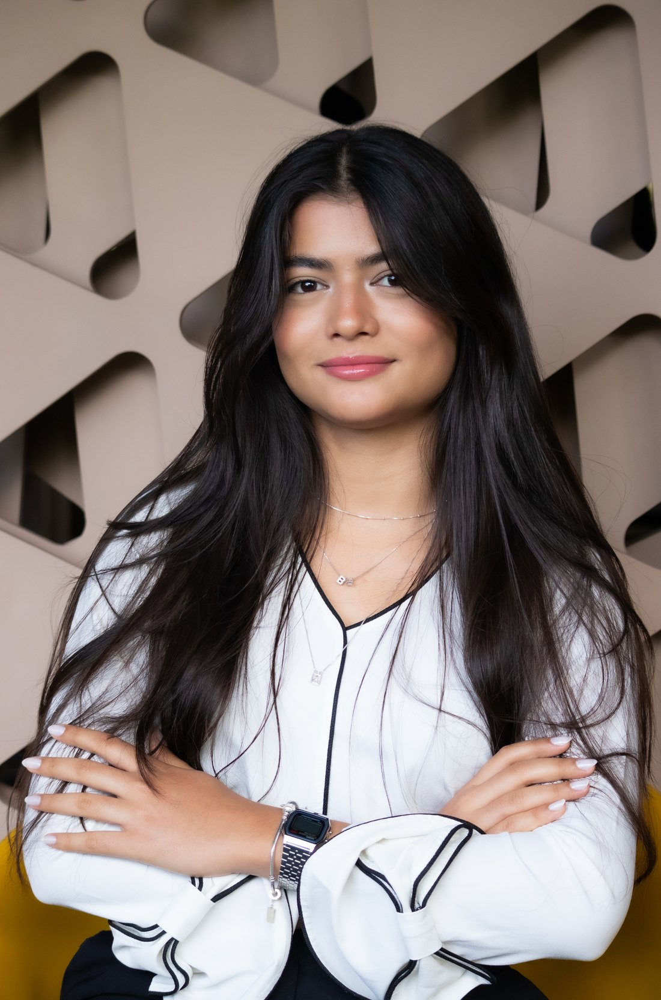
Minha trajetória começou ainda no ensino médio, em Recife, quando cursei Análise e Desenvolvimento de Sistemas no Porto Digital. Foi nesse período que vi de perto a tecnologia resolvendo problemas reais e encontrei o que mais me interessava: transformar essa capacidade em experiências que fizessem sentido para as pessoas.
Na graduação em Ciência da Computação na Universidade Católica de Brasília, ao longo das disciplinas, descobri que o Product Design era uma forma de unir meu conhecimento técnico à experiência do usuário. A partir disso, minha formação acadêmica passou a ser um diferencial na maneira como projeto.
Entre premiações em hackathons, projetos em grupo e estágio em uma startup, assumir o papel de designer aconteceu de forma natural. Nessas experiências, aprendi a equilibrar as necessidades do usuário, os objetivos do produto e a viabilidade técnica, sempre em colaboração com o time.
Hoje, como Product Designer na Apple Developer Academy, aprofundo minha atuação no desenvolvimento de produtos para o ecossistema iOS. Gosto de participar de todo o processo, da compreensão do problema à interface final, buscando criar experiências simples de usar, tecnicamente viáveis e relevantes para quem está do outro lado da tela.
Os hackathons me ensinaram que tempo, escopo e recursos quase nunca são ideais. Em vez de enxergar essas limitações como barreiras, aprendi a usá-las para tomar decisões mais objetivas, priorizar o que realmente gera valor e manter o produto evoluindo.
Grande parte dos projetos em que participei aconteceu em equipes multidisciplinares. Percebi que as melhores soluções dificilmente surgem de uma ideia individual, mas das conversas, dos questionamentos e da troca constante entre design, desenvolvimento e produto.
Ao longo da Apple Developer Academy, entendi que uma interface, por si só, raramente resolve um problema. Antes de abrir o Figma, procuro compreender o contexto, os objetivos do produto e o comportamento das pessoas para que cada decisão tenha um motivo claro.
Os projetos que mais me fizeram evoluir foram justamente aqueles em que minhas ideias foram questionadas. Aprendi a enxergar o feedback como uma ferramenta de construção, refinando soluções junto ao time em vez de me apegar à primeira proposta.
Uma característica que desenvolvi ao longo dos projetos é não me contentar com a primeira resposta. Gosto de explorar alternativas, testar possibilidades e revisar decisões sempre que encontro uma oportunidade de melhorar a experiência ou simplificar uma solução.
Product Designer na Apple Developer Academy
Estágio em Design UX/UI e Desenvolvedora Front End
Web Designer e Desenvolvedor no Porto Digital
Bacharelado em Ciência da Computação
Curso técnico em Análise e Desenvolvimento de Sistemas
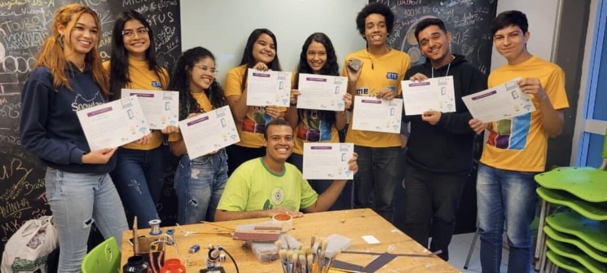
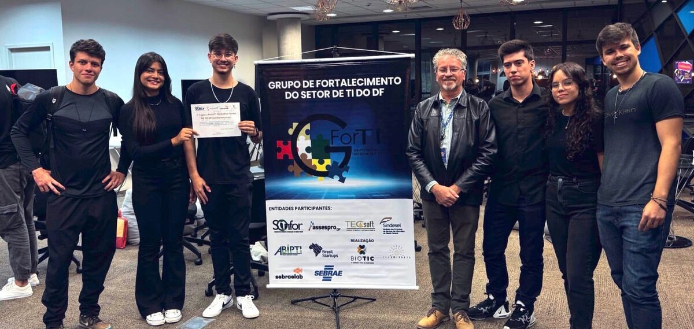
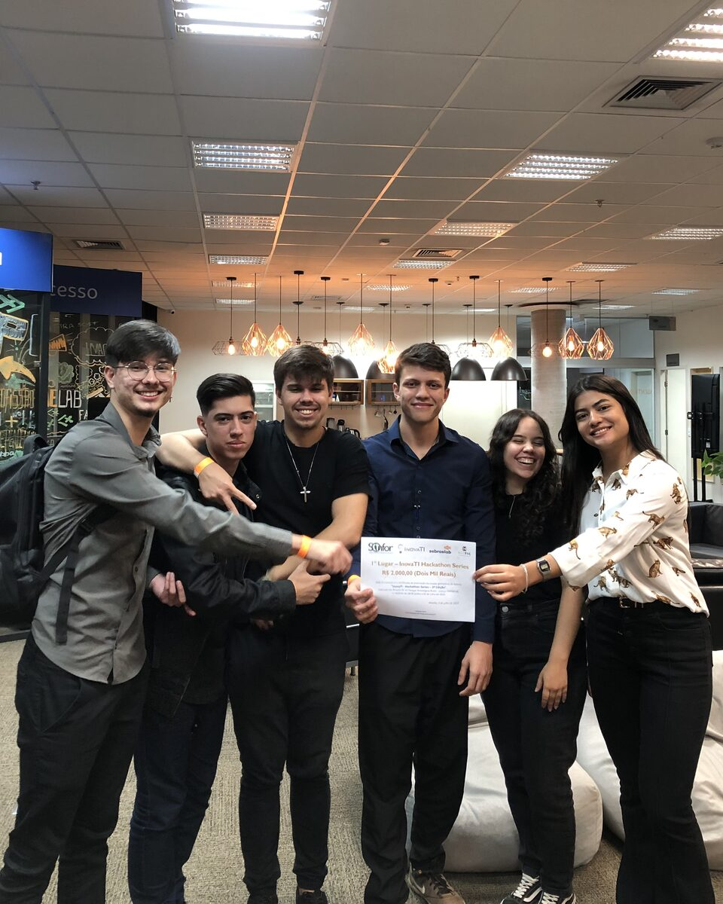
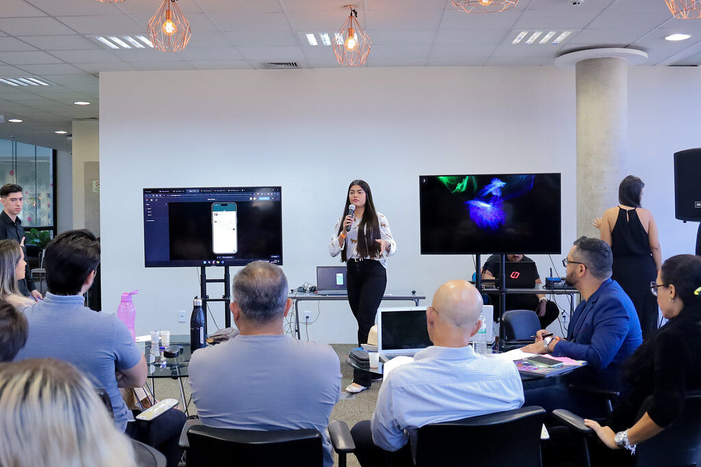
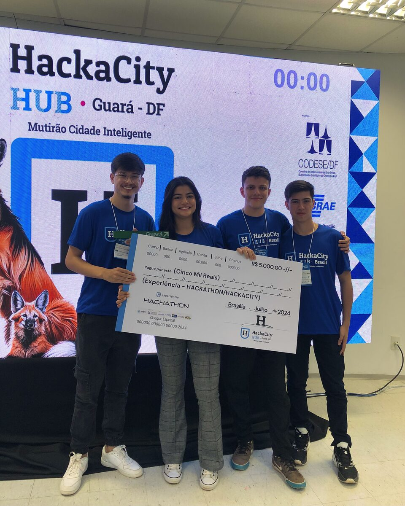
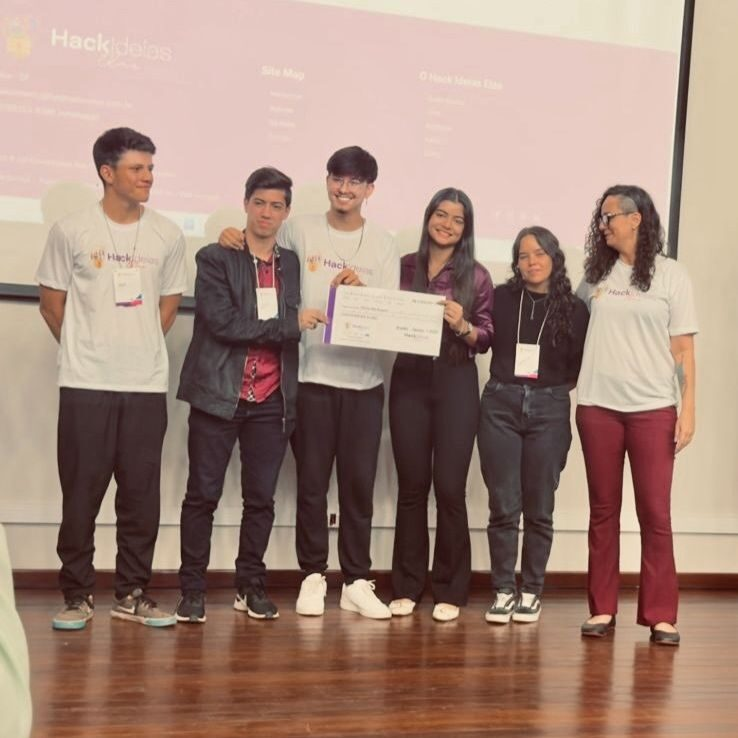
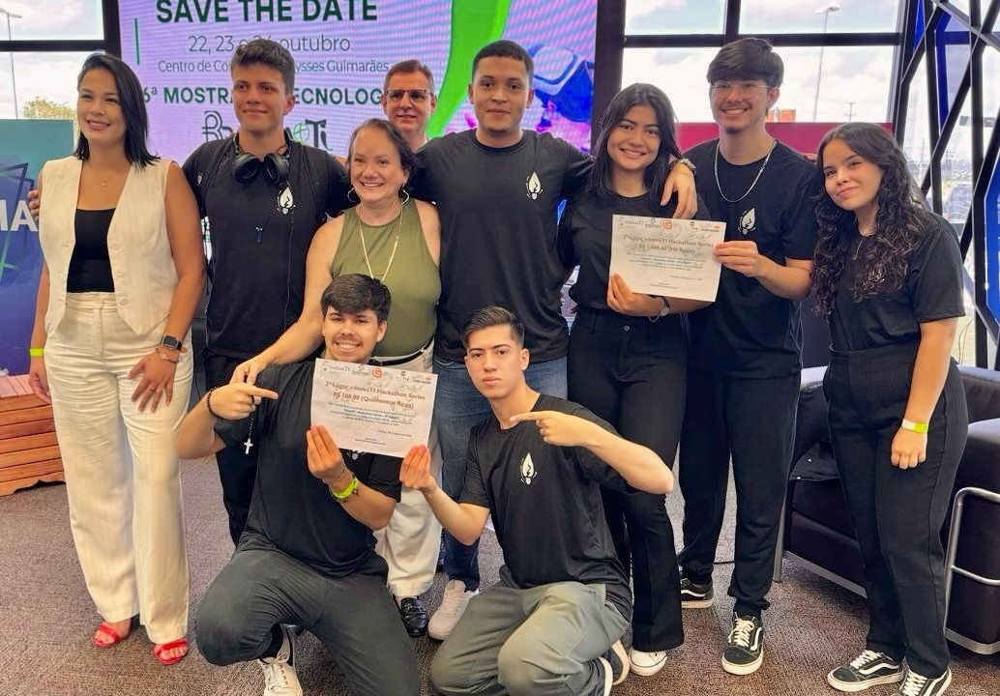
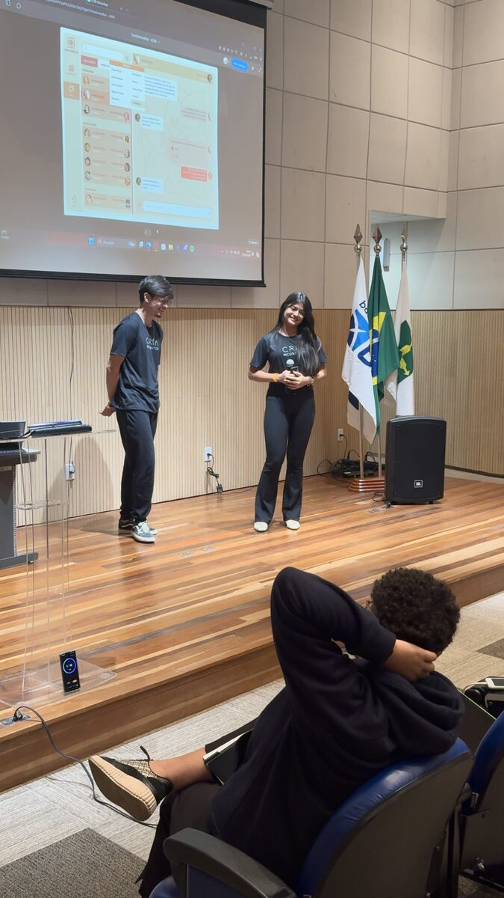
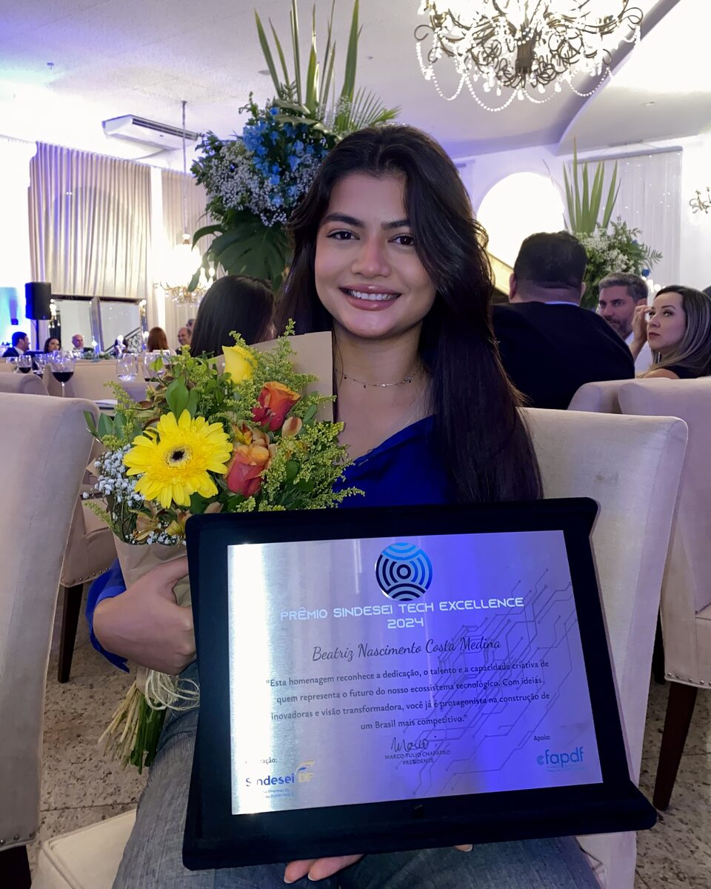
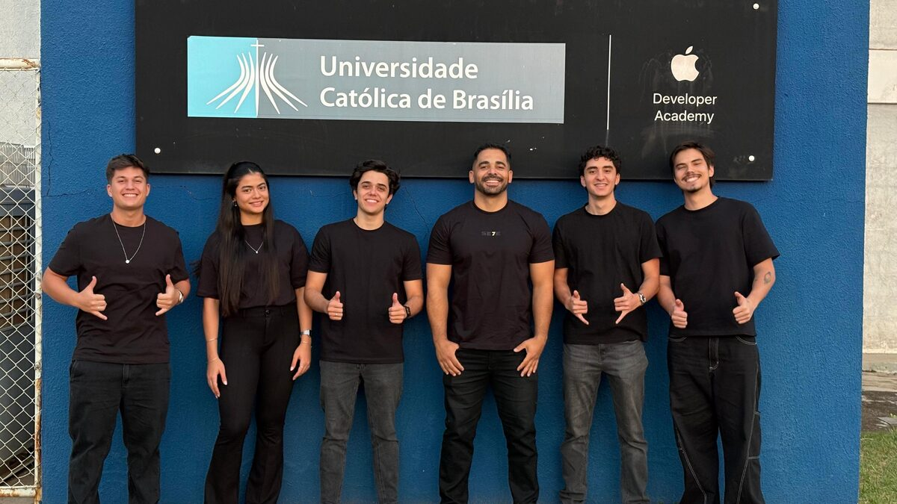
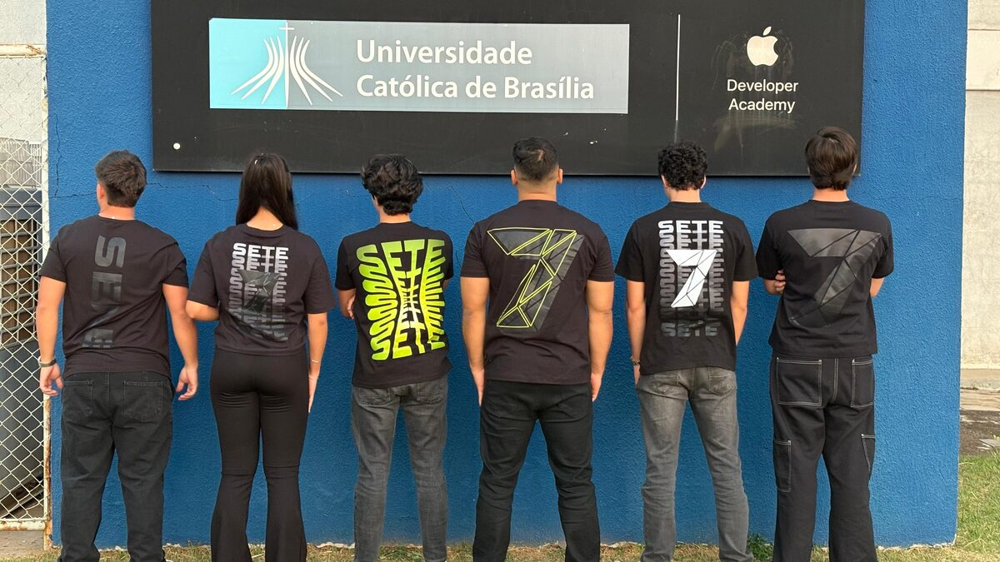
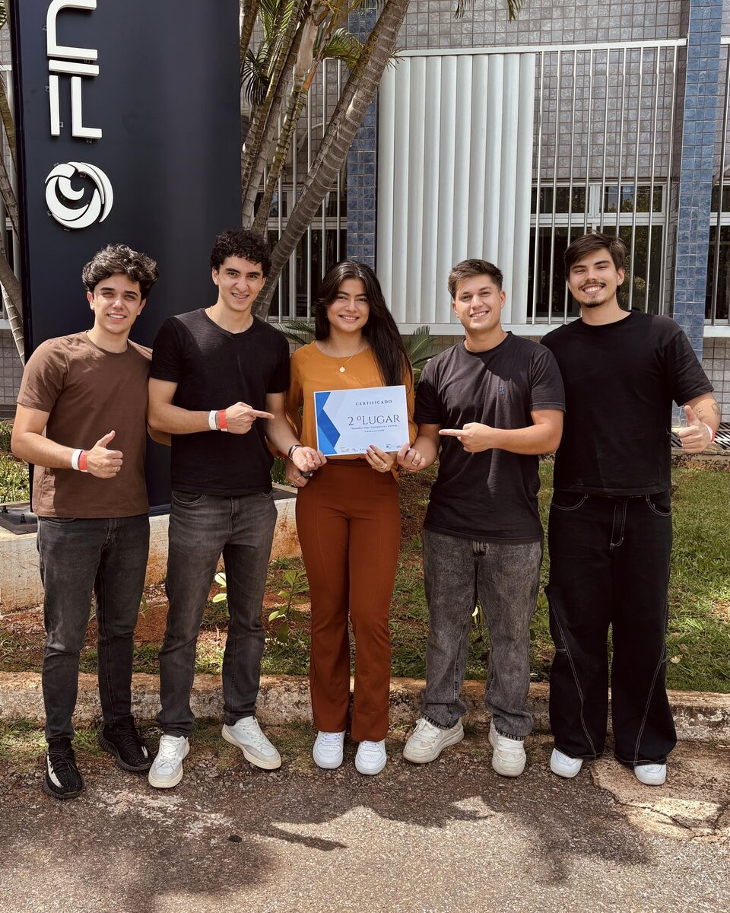
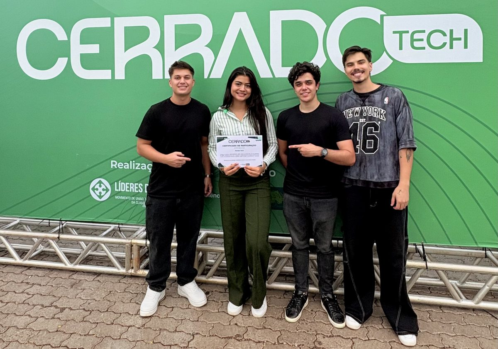
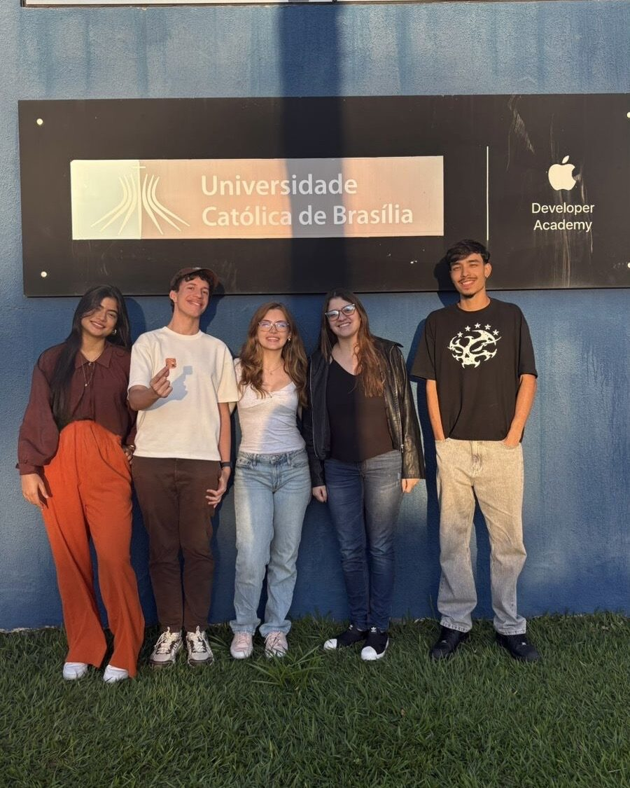